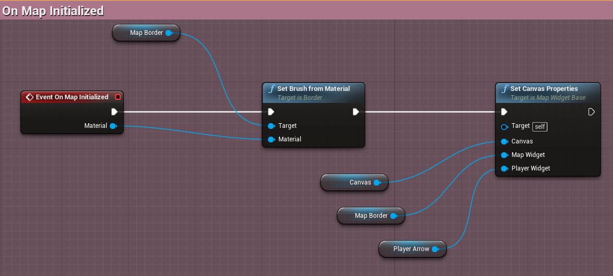
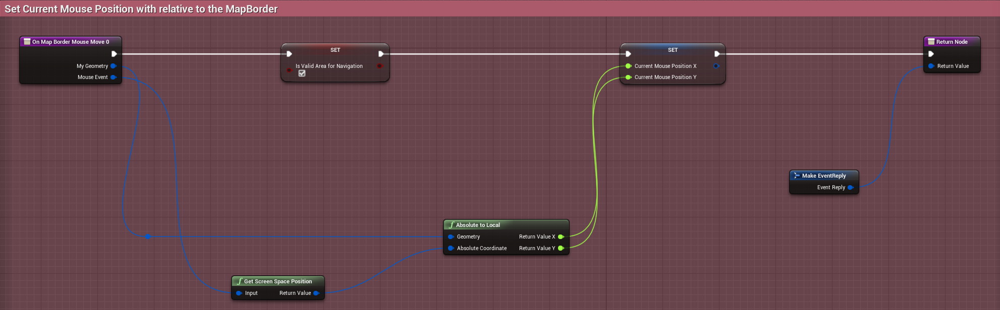
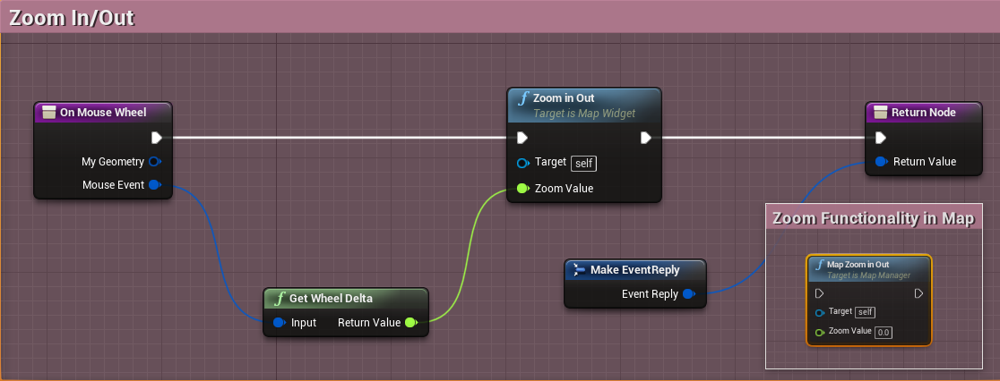
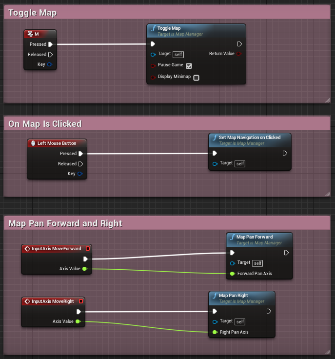

Minimap, Map and Navigation System Documentation
This documentation lets you quickly get started with integrating this plugin to your projects and implement your own Minimap and Map in no time.
The Plugin Structure
Once you have installed the plugin from the launcher, either create a new project, or download the example project to test out. Ensure that the plugin is enabled by visiting the plugin window and browsing over to the IMapsAndNavigation plugin.

The plugin comprises of various UserWidget classes, the example widgets demonstrating how to use them, and several actor classes which highlight the implementation of the system in a scene. It also contains the necessary materials and textures that we would need for the demonstration. We now will look into how the contents of the plugin are defined and various functionalities of each class.
When you download the plugin from the Launcher, this is installed as an Engine plugin, so in order to view its contents you need to enable Show Engine Content from the View Options.

In this section, we will learn a brief overview of various classes included in the plugin, and their functionalities.
The MapBounds Actor

Instances of MapBoundsActor class form the integral part of this plugin, as they define the Bound Area for both the Minimap and Map. Within the Blueprints folder, you will find a derived Blueprint chiild of the MapBoundsActor called BP_mapBoundsActor which you can use to define the Map Bounds for your game. You need to place at least one of the instances in your scene. Each MapBoundsActor represents Bounds area corresponding to a given Minimap Texture. So having more than one MapBoundsActor in a scene indicates switching between multiple Minimaps depending on position of the player. This is very useful for large or open world scenes, where you often need to switch your Minimap while moving inside a different Bounds, like a cave, or a house interior.
| Property Name | Description |
|---|---|
| Level Bounds X | Adjust the length of the Bounds. |
| Level Bounds Y | Adjust the width of the Bounds. |
| Level Bounds Z | Adjust the height of the Bounds. |
| Minimap Texture | Texture representing the Minimap for the corresponding MapBounds Actor. |
| Minimap Mask Texture | Opacity Mask Texture for non rectangular Bounds. |
| Local Map | If the given Bounds represent a Local map, it will have its own Local Map texture to be displayed in the Map. |
| Local Map Texture | The texture to display as Map for the given Bounds, provided we show a seperate Local Map in our Map widget for this Bounds actor. |
| Allow Switching To WorldMap | This boolean variable can be optionally used to conditioally enable or disable switching between local and world map, in the given Bounds. |
Points to Remember
- The MapBoundsActor class is used to define the Bounds of the Map and the Minimap.
- At least one MapBoundsActor has to be placed in a scene.
- Multiple MapBoundsActors in a scene allow transition between different Minimap textures for different regions and can be useful for defining world map and local maps.
The MapManager

Once we place our MapBoundsActors and define the bounds area and the other parameters, we are going to need an instance of MapManager Actor in our scene. This manages the entire system, displaying the minimap and the points of interest, transitioning between the multiple BoundsActors, displaying the map and handling the input, displaying waypoints for destination markers. This comes with few tweakable parameters, and every level intending to use the Minimap system should contain one MapManager.
| Property Name | Description |
|---|---|
| Minimap Widget Class | Represents the UMG Instance of the Minimap Widget that will be used to visually represent the Minimap for our game. |
| Minimap Element Widget Class | Represents the UMG Instance of the POI Element Widget for the Minimap that will be used to visually represent the POI Actors present in the given scene, if those actors are supposed to be displayed in the MiniMap. |
| Minimap Nav Widget Class | Represents the UMG Instance of the Navigion markers currently present in the scene, that are displayed in the Minimap. |
| POIElementTable | The Datatable containing all the POIElement classes, which is used to display POI elements with unique set of properties, corresponding to the POI Actors of a given class. |
| Map Widget Class | Represents the UMG Instance of the Map Widget that will be used to visually represent the Map for our game. |
| Map Element Widget Class | Represents the UMG Instance of the POI Element Widget for the Map that will be used to visually represent the POI Actors present in the given scene, if those actors are supposed to be displayed in the Map. |
| World Map Bounds Actor | The MapBoundsActor representing the overall bound for the world map, used to calculate Bounds for our Map. |
| World Map Texture | The texture representing the World Map, and will be used by our Map Widget. |
| Navigation Widget Container Class | Represents the UMG Instance of the Widget that will contain all the Navigation Widgets, each of which would visually represent the Navigation markers in the world location. |
| Use Fixed Zoom | This define whether the Zoom Level of the Minimap will be fixed, that is, it will not be relevant with the overall area of the current Bounds and rather the Zoom will be autocalculated based on a given zoom area. If we do not use Fixed Zoom, we need to define Zoom in our Minimap Material Instance. |
| Fixed Zoom Area | If we use Fixed zoom, this variable would represent the Zoom area for the Minimap. |
Points to Remember
- MapManager handles all the funcionalities relevant to this plugin, including calculation of the current Bounds and displaying relevant Minimap, Map and Navigation Widgets
- Only one MapManager should be placed in a scene
The POIElement DataTable

The actors which are displayed as Icons in Minimap as well as Map, also known as the Points of Interest(POI), are defined in a Datatable, derived from the structure POIElement. Each row in our POIElement table represents a specific Actor class that we want to highlight in our Minimap or Map or both. The POIActors can either be static or dynamic, and is not limited to what it can represent. It can be a pickup item, an NPC, enemies, or simply a Fast Travel system, the applications are infinite. Each POIActor entry in the POIElement table has its own sets of properties that increase further customizations.
| Property Name | Description |
|---|---|
| Element Class | Class of the Actor corresponding to the given Point of Interest Element. |
| Display In Map | If the given POI Element type should be displayed in Map. |
| Display In MiniMap | If the given POI Element type should be displayed in Minimap. |
| Manual Display | If set to true, the given POI Element type will not be displayed by default. |
| Allow Rotation Change | If the POI Element texture should rotate with the rotation of the corresponding actor. |
| MiniMapElementInfo - Element Icon | Texture representing the corresponding POI Element type displayed in the Minimap. |
| MiniMapElementInfo - Element PointerIcon | Texture representing the out of bounds pointer for the corresponding POI Element type displayed in the Minimap. |
| MiniMapElementInfo - IsStatic | If the given Element type represents static or dynamic Actor. Static Actors are specific to a MapBounds Actor it was initially inside, and the Dynamic Actors can move within any MapBounds actor at a given point of time and their POI positions within the Minimap will be updated at realtime depending on the MapBounds Actor it is currently in. |
| MiniMapElementInfo - Fixed Rotation | If the Rotation of the POI Element is fixed even if the Minimap is set to Rotate with player rotation. |
| MiniMapElementInfo - Allow Pointer Rotation Change | If the given Element pointer (when the element is out of bounds) should rotate with direction change. |
| MiniMapElementInfo - Minimap Image Size | Size of the Texture representing the given POI. |
| MiniMapElementInfo - Always Visible In Range | If the given POI Element is always visible, even when out of bounds. |
| MiniMapElementInfo - Visibility Radius | If the given POI Element is not always visible, the radius around the player beyond which the element will not be visible. |
| MapElementInfo - Can Hover | If the give POI displayed in Map Widget can have a custom event when mouse cursor is hovered on it. This property can be used to display tooltips on custom POI, or change its size while hovering. |
| MapElementInfo - Can Navigate | If the give POI displayed in Map Widget can have a custom be marked for navigation. |
| MapElementInfo - Can Hover When Selected | If the give POI displayed in Map Widget can have a custom event when mouse cursor is hovered, while it is marked for navigation. |
| MapElementInfo - Show Distance | This property can be used to selectively show distances for only certain types of POI Map Elements. |
| MapElementInfo - Allow Multi Selection | If multiple instances of the given POI Element can be marked for navigation. |
| MapElementInfo - Unique Selection ID | When MultiSelection is set to true, we need to provide a Unique ID that is checked to easily identify the selection type and mark multiple instances of the POI Element having same Selection ID accordingly. |
| MapElementInfo - Element Icon | Texture representing the corresponding POI Element type displayed in the Map. |
| MapElementInfo - Element Hovered Icon | Texture representing the corresponding POI Element type displayed in the Map when the element is hovered with mouse cursor. |
| MapElementInfo - Element Selected Icon | Texture representing the corresponding POI Element type displayed in the Map when the element is marked for navigation. |
| MapElementInfo - Element Size | Size of the POI Widget Element. |
| MapElementInfo - Element Hover Size Ratio | Size ratio of the POI Widget Element with respect to the original size, when the Element is hovered upon. |
| MapElementInfo - Element Selected Size Ratio | Size ratio of the POI Widget Element with respect to the original size, when the Element is marked for navigation. |
| MapElementInfo - Element Selected Hover SizeRatio | Size ratio of the POI Widget Element with respect to the original size, when the Element is already marked for navigation and is hovered upon. |
| MapElementInfo - Minimum Visibility By Zoom Level | If the Element should be visible below a minimum zoom level of the Map. |
| MapElementInfo - Minimum Zoom Level | Minimum Zoom Level of the Map below which the given Element type will not be visible, if MinimumVisibilityByZoomLevel is set to true. |
| MapElementInfo - Maximum Visibility By Zoom Level | If the Element should be visible beyond a maximum zoom level of the Map. |
| MapElementInfo - Maximum Zoom Level | Maximum Zoom Level of the Map beyond which the given Element type will not be visible, if MaximumVisibilityByZoomLevel is set to true. |
| MapElementInfo - Always Visible | If the given POI Element type is always visible within range. |
| MapElementInfo - Visibility Radius | Radius around player beyond which the given POI Element type will not be visible, if AlwaysVisible is set to false. |
| MapElementInfo - Visible Outside Range | If the given POI Element type is visible even outside current range of the Map. |
| MapElementInfo - ToolTip Data | An array of strings passed in the ToolTipWidget corresponding to the given POI Element type. |
| MapElementInfo - ToolTip Widget Class | The Widget class for the ToolTip that is displayed, when the given Element type is hovered upon. |
Points to Remember
- POIElement Datatable represents Points of Interest that are added in Minimap , Map or both, depending on the properties set.
- Each row in POIElement table contains properties specific to a type of POI Actor placed in the world.
The Minimap Widget

Widgets derived from the base class MinimapWidget can be used to design your customized Minimap. Minimaps are texture based and each MapBoundsActor corresponds to a Minimap Texture that would represent the
area within the respective Bounds. Minimaps can be rectangular as well as circular in nature with optional AutoRotate feature to automatically rotate the Minimap based on the Character rotation. Minimaps can have Zoom Levels ranging
between 0 and 1, with 1 being completely Zoomed Out. The Zoom Level can either be defined in the corresponding Material Instance applied on the Minimap, or via fixed Zoom Area, which will automatically calculate the Zoom Level
based on the predefined area, irrespective of the Bounds Size. Minimap Widgets calculate and display the position of the player and the Points of Interest in realtime.
| Property Name | Description |
|---|---|
| Initial Rotation | Initial Rotation of the entire Minimap Widget. |
| AutoRotate Map | If the Minimap should be automatically rotated based on the rotation of the player pawn. |
| Minimap Material | Parameterized material applied to the Minimap. |
| Minimap Circle Masked Material | Parameterized material applied to the Minimap, when the Minimap is set to be circular. |
| Allow Circle Mask | If the Minimap should be Circular shaped. If this is set to true, we need to set a material in MinimapCircleMaskedMaterial. |
| Player Angle Offset | Offset the rotation of the player arrow. |
| Custom Navigation Icon | Icon displayed in the Minimap representing custom Navigation marker set in the map. |
| Custom Navigation Image Size | Size of the Image Widget representing the custom Navigation marker in the Minimap. |
| Centrical Player Position | If the position of the player marker is always at the center of the Minimap. |
Points to Remember
- Texture Based Minimap Widget, with optional Circular Masking.
- Each MapBoundsActor instance placed in the level represents a region in the Minimap and has its own Texture which should exactly map to the Bound Area enclosed by the MapBoundsActor.
- Zoom Level in the Minimap can be either user defined which is set in the material instance applied on the Minimap, or fixed area, where Zoom is autocalculated based on the given area irrespective of the Bounds Size.
- Static and Dynamic Points of Interest can be displayed in Minimap and can be added and modified as entries in the POIElement DataTable.
- Static Points of Interest are mapped with the MapBoundsActor enclosing them, and will only be replaced when Bounds change.
- Dynamic Points of Interest are not specific to any MapBoundsActor, so which Dynamic POIs should be currently displayed in the Minimap is recalculated at every tick.
- The Minimap Widget calculates the position of Static and Dynamic POIs as well as the player position in realtime.
The MinimapElement Widget

Widgets derived from the base class MinimapElementWidget are used to design Points of Interest in the MinimapWidget. It has a variety of features, including an optional visibility radius beyond which it won't
be visible, and custom pointer textures to determine its location when it is out of Minimap's range.
Points to Remember
- MinimapElementWidgets are used to design Points of Interest Elements displayed in the Minimap.
- Each POI Actor class has its own set of unique properties corresponding to its MinimapElementWidget, defined in a structure called MinimapElementInfo in the POIElement DataTable.
- MinimapElements can have custom visibility based on a user defined radius around the player character, or can be set to always visible.
- MinimapElements trigger Notifications when it comes in and goes out of bounds of the Minimap, to create custom Pointer Images, each of which determine the direction the respective MinimapElement is located.
The Map Widget

Widgets derived from the base class MapWidget are used to design Interactive Map System. Map can be Zoomed In/Out and Panned Forward/Backward, Right/Left. Just like Minimap, a Map will also contain several
Points of Interest Elements, whose locations are calculated based on the corresponding Actors they represent in the world.
| Property Name | Description |
|---|---|
| Map Material | Parameterized material applied to the Map. |
| Allow Multi Selection | If multiple custom markers can be add to the map for Navigation. This should not be confused with the similar property in POIElement table, where multi selection determines multiple selection of the POI Elements of the same type. |
| Custom Navigation Marker Size | Size of the Image Widget representing the custom Navigation marker in the Map. |
| Custom Navigation Icon | Icon displayed in the Map representing custom Navigation marker. |
| Show Custom Navigation Distance | This property can be used to choose whether to show distance for the custom navigation marker. It is upto the user to use this property and display the distance widget accordingly, in the UMG widget for the Navigation Marker. |
Points to Remember
- Maps have Zoom and Pan functionalities which can be bound with custom keys and mouse events.
- Maps contain Points of Interest Elements, whose properties are determined from the class of the Actor it represents, defined in the POIElement DataTable.
The MapElement Widget

Widgets derived from the base class MapElementWidget are used to design Points of Interest in the MapWidget. It has a variety of features, including visibility by Zoom Level, custom ToolTip Widgets, and mark
for Navigations. Widgets derived from the base class ToolTipWidgetBase are used to design customized tooltips specific to a MapElement of given Actor class. So every Actor class represented by MapElements can have
their own custom ToolTipWidgets, which appear when a MapElement is hovered.
Points to Remember
- MapElementWidgets are used to design Points of Interest Elements displayed in the Map.
- Each POI Actor class has its own set of unique properties corresponding to its MapElementWidget, defined in a structure called MapElementInfo in the POIElement DataTable.
- Visibility of the MapElements can be set based on Zoom Level. So a MapElement can either be always visible, or only visible when the current ZoomLevel of the map is within the specified range.
- ToolTipWidgets are specific to the corresponding Points of Interest Actor classes and would appear in a map when corresponding MapElement is hovered.
The Navigation Widgets
The Navigation system is comprised of four sections -
-
The widget derived from NavigationWidgetContainer contain all the markers that are placed at the world location of the destination actor, when Navigation is active.
Property Name Description Navigation Widget Class UMG widget representing the Navigation UI that are displayed in the game viewport for every Navigation. Custom Navigation Actor Class This is an optional property which represents the actor class that would be spawned at the world location of every navigation. This can have many purposes, for example, to highlight the navigation, with particle effects. - Widgets derived from NavigationWidget are the elements contained by the NavigationWidgetContainer and correspond to Actors placed in the world location, for which Navigation is currently active. This triggers InBounds and OutofBounds notifications so that we can add custom pointer icon when required, to determine the position of the target at world location, when the Navigation is out of view.
- The Navigation markers displayed in the Minimap are derived from MinimapElementWidget.
- Custom Navigation markers that we add in the map are derived from NavMarkerWidget.
Quick Start with the Example Project
Once you get yourself familiar with various components of this plugin, you can now quickly start with the example project, to understand the basic implementation, before we proceed with in depth tutorials.
When you open the example project, you start with a scene where I have already placed several MapBoundsActors and one MapManager.

Customizing The MapBoundsActors
To edit the Bounds size in either axis, you simple modify the corresponding Bounds Dimensions from the details panel respectively, instead of scaling the actor. Update the MinimapTexture property to add your own texture that would represent the corresponding MapBoundsActor.

For non rectangular bounds, such as a building or a cave, you can define custom bound shape via opacity mask textures. You need to add your mask in the MinimapMaskTexture property.

Customizing The MapManger
Every level should have only one MapManager which is responsible for necessary calculations of the bounds and communication between Widgets, displaying the Minimap and Map whenever necesarry.

Extended child actor of the MapManager, called BP_mapManager, an instance of which currently placed in the scene, containing some additional functionalities like binding with input components, can be found in Blueprints folder in the plugin content directory.
Most of the relevant widgets that we had discussed above should be added in the MapManager instance placed in the level, along with the POIElement table that would identify and display the Points of Interest Actors in the Minimap and Map. The Widgets can be found in the Widgets folder in the plugin content directory.

Adding Points of Interest
The POIELement DataTable, derived from the POIElement structure, consists of all the actor classes which we intend to use as Points of Interest to be displayed in our Minimap and Map. An instance of this datatable can be found in the DataTables folder of the plugin content directory. This needs to be added in the MapManager to display the Points of interest in the Minimap and the Map.

To add a new POI type, you need to add a new row in the POIElement Datatable and add your class reference in the ElementClass column.
Customizing The Minimap
Widgets derived from the MinimapWidget class are used to design the Minimap. A child instance called UMG_Minimap can be found in the Widgets folder in the plugin content directory.
In the below pic, we can see that the MinimapWidget is comprised of four different controls -
- The MinimapBorder, which encloses the entire widget and is used to calculate the Size of the Minimap.
- The MinimapCanvas, which contains the Minimap Texture, the Points of Interest and the Player Position.
- The Minimap Image, which displays the Minimap Texture, with the Pan and Zoom level as calculated.
- The Player Arrow, displaying the position and direction of the player.

Apart from these, we also have static and dynamic POI Elements which are created and positioned at runtime.
The event OnMinimapInitialized is fired once, during the initialization of the given Minimap Widget. Here we need to call the function Set Canvas Properties and pass our MinimapCanvas, MinimapBorder and the widget representing the Player position.
The event OnMinimapUpdated is fired at every frame, and it passes the calculated Minimap Material that has proper Pan and Zoom logic applied. We then set the material in our Minimap Texture.

Customizing The Minimap Element
Widgets derived from the MinimapElementWidget class are used to design the Minimap Elements, which represent the Points of Interest within our Minimap Widget. A child instance called UMG_MinimapElement can be found in the Widgets folder in the plugin content directory.
The event OnMinimapElementInitialized is fired once, during the initialization of the given MinimapElement Widget. ElmentIcon is a variable defined in base class, which contains the Texture representing the given Minimap Element. The texture is set in the POIElement Datatable. We need to use this variable to set the texture for the corresponding UMG control, as shown below.

The events OnWidgetInRange and OnWidgetOutofRange are fired when the actor represented by the given MinimapElement goes in Bounds and out of Bounds of the current Minimap area, respectively. While the variable ElementIcon represents the default texture for the element widget, the variable ElementPointerIcon represents the texture, if any, when the widget is out of bounds. This is an optional parameter, and is set in the POIElement Datatable.

Customizing The Map
Widget derived from the MapWidget class is used to design the Map, which has a number of features that are inpired from map system of games from different genres. You can Pan, Zoom In and Out using custom Input Binding. Different POI Elements can be added based on ZoomLayer. A child instance called UMG_map can be found in the Widgets folder in the plugin content directory.
In the below pic, we can see that the MapWidget is comprised of three different controls -
- The MapBorder, which encloses the entire widget, displays the Minimap Texture and is used to calculate the Size of the Map.
- The Canvas, which contains the Map Texture, the Points of Interest and the Player Position.
- The Player Arrow, displaying the position and direction of the player.
Apart from these, we also have POI Elements which are created and positioned at runtime.
The event OnMapInitialized is fired once, during the initialization of the Map. This event gives us the material instance corresponding to the entire map area of the current map, which we then set in the respective widget. Here we also need to call the function Set Canvas Properties and pass our Canvas, MapBorder and the widget representing the Player position.
To enable mouse interaction within Map, it is important to store the current mouse position in a variable. For that I am capturing the OnMouseMove event of our MapBorder, and setting the CurrentMousePosition variable with the position of the mouse.
To Zoom In and Out in the Map, we can call the function ZoomInOut. In the MapWidget example, I have bound the function with Mouse Wheel Axis. You can also use the functionality from the MapManager instance by calling MapZoomInOut.
The functions MapPanForward and MapPanRight can be called from the MapManager instance to Pan the Map material in forward/backward and right/left, respectively, based on the given axis values.
To set the navigation markers on button pressed at the given mouse location, we need to call the function SetMapNavigationOnClicked from the MapManager instance. For this function to work properly, the current mouse position must be set, as shown above.
Calling the function ToggleMap from the MapManager instance would display/hide the current MapWidget.
Customizing The Map Element
Widgets derived from the MapElementWidget class are used to design the Points of Interest Elements displayed in the Map. A child instance called UMG_mapElement can be found in the Widgets folder in the plugin content directory.
The variable CurrentViewportPosition is set via Blueprint at the tick event. This is used to check if the given MapElement is within view.

Based on the properties set in the POIELement DataTable against a particular MapElement, the Elements can be Hovered and Selected. The functions OnHovered and OnUnHovered need to be explicitely called from the Widget BP at OnMouseEnter and OnMouseLeave events. Events OnSelected and OnDeSelected are triggered when a selectable MapElement
is Selected and DeSelected, respectively.

A MapElement can have different icons with different sizes while being hovered and selected, based on the properties set in the POIELement DataTable. The event OnElementIconChanged is fired,
when an Icon Update occurs, so that we can update our UMG control accordingly.

Customizing The Navigation System
As mentioned earlier, the UserWidget class NavigationWidgetContainer contains all the navigation markers that are displayed in the game viewport. An instance of this class UMG_NavigationContainer can be found in the Widgets folder in the plugin content directory. This instance is added in our MapManager Actor placed in the scene, to enable the Navigational Widgets display.
Just like in the Minimap and the Map Widgets, here also we need to call the function Set Canvas Properties and pass our Canvas.

Points of Interest present in the Map can be marked for Navigation by selecting them, provided they allow selection, via a property called CanNavigate defined in the POIELement Datatable against
the given POI Actor type.

An instance of NavigationWidget, called UMG_NavigationElement, can be found in the Widgets folder. This is added in our Container Widget, and represents the navigation UI
corresponding to every waypoint displayed in the game viewport.
The event OnNavigationElementInitialized is fired when a new navigation is set. The variable Element Navigation Icon represents the texture corresponding to the given navigation, and displayed in the game viewport. This texture is defined in the POIElement Table. We use this variable to set the texutre for our corresponding UMG Control.

The event OnReceiveCurrentTransform updates the current transform of the destination which corresponds to the given Navigation. The transform is obtained at every frame and can be used to show current distance
to destination, or display notification widget once the destination is reached.

Notifications are triggered when the given Navigaiton Widget comes in range and goes out of the range of the game viewport. This is very useful to display custom pointer indicating the direction of the destination, when the
player camera is not directly looking at the destination.

The events OnNavigationInBound and OnNavigationOutofBound are triggered when the destination is aligned with the player camera view, and when the destination is out of view, respectively.
I am using these events to display/hide custom pointer marker that shows direction of the navigation, as shown above.


To display the Navigation Icon in our Minimap, we need to create a UMG derived from MinimapElementWidget. The widget UMG_MinimapNavElement, is used to create POI for navigations in the Minimap,
and can be found in the Widgets folder. This is added against the property MinimapNavWidgetClass in our MapManager instance placed in the scene.
Custom Navigation marker can be added in the Map via NavMarkerWidget class, an instance of which, called UMG_NavigationMarker, is added in the Widgets folder. The NavigationMarker Widget is added in the class defaults of our Map Widget. Custom marker can have unique Navigation Icon displayed in the game viewport and in the Minimap as well. This is set in our POIElement Datatable.
The Navigation Actor
When we add a Navigation in our Map, an instance of the Actor class is created at the destination. It is possible to replace this actor with custom actor, which can be used for custom functionalities you would want to link with the given waypoint, like a visual representation of the target waypoint in the game world, which can be viewed from a distance.
An instance of NavigationWidget, called UMG_NavigationElement, can be found in the Widgets folder. This is added in our Container Widget, and represents the navigation UI corresponding to every waypoint displayed in the game viewport.
The event OnNavigationElementInitialized is fired when a new navigation is set. The variable Element Navigation Icon represents the texture corresponding to the given navigation, and displayed in the game viewport. This texture is defined in the POIElement Table. We use this variable to set the texutre for our corresponding UMG Control.
The event OnReceiveCurrentTransform updates the current transform of the destination which corresponds to the given Navigation. The transform is obtained at every frame and can be used to show current distance to destination, or display notification widget once the destination is reached.
Notifications are triggered when the given Navigaiton Widget comes in range and goes out of the range of the game viewport. This is very useful to display custom pointer indicating the direction of the destination, when the player camera is not directly looking at the destination.
The events OnNavigationInBound and OnNavigationOutofBound are triggered when the destination is aligned with the player camera view, and when the destination is out of view, respectively. I am using these events to display/hide custom pointer marker that shows direction of the navigation, as shown above.
Important Features
Minimap Actor Component
So far we have seen that to add Points of Interest Elements in the Minimap and the Map, for actors belonging to specific classes, we simply add the class type in the POIElemet table, and specify the properties respective to the POI for that particular Actor class type, and all actors in the current scene having the same class type will have same type of POI Element. But, sometimes, it is far convenient and useful to assign specific instances of a class a particular POI type, or simply map some spefic actors in the level with some specific POI type. To do so, we need to attach Minimap Actor Component in the Actor that we want to assign a custom POI Element into.
Minimap Actor Component is a Blueprint derived from ActorComponent, and demonstrates how we can add custom POI Element for a specific actor in our MapManager.


Just like how a normal ActorComponent works, you can attach the Minimap Actor Component to either your Blueprint Actor, or an actor already placed in the level, and then edit exposable structure variable POIElement to modify the properties for the corresponding POI Element of the given actor.

Minimap Actor Component is very useful for displaying other players in a Multiplayer game, when we attach the Component to our Player Pawn class. To hide the marker representing the player pawn, as we already have a custom player marker added in our MinimapWidget, we can perform an additional condition check in our MinimapComponent class, found inside the Blueprints folder of our Plugin Content Directory.

Minimap Masking
As we have seen, the Bound shapes of the instances of MapBoundsActor class that we place in our level to define our Minimap Bounds, are rectangular. While this will solve purpose in most cases, when we do not explicitely switch between bounds in a single level, there may be scenarios, when the limitation of the Bounds being rectangular will not prove useful when we are switching between multiple Bounds within the same level. For example, in an open world game, when we move inside a cave, we might change the Minimap Bounds to show a different region, which is the interior of cave, and as soon as we come outside, we show the Minimap region representing the outside area. The cave is a non rectangular area, and we must display smooth transition between the outside and the inside bounds. To achieve this, we use Minimap Mask Texture, in the instance of the MapBoundsActor the given non rectangular bounds is associated with. A Mask Texture is a just an opacity texture of the actual Minimap Texture, where the black pixels represent the area which is outside the bounds of the current region. So, when the player is moved to the region corresponding to the black pixel of the Minimap Mask Texture, the current location of the player will not be counted as being inside this non rectangualar bounds, and the outer Bounds area(which might represent world map, or a bigger region enclosing the current region) will be considered as the current Bounds.
Minimap Mask Texture can be added to the corresponding MapBoundsActor placed in the Scene.

Circular Minimap
Circular Minimaps are created via Circular Opacity Masks applied to the material. To make your minimap circular in nature, which would not only changes the shape of the Minimap but will also ensure that the POI elements always stay within the circle, you need to check the variable Allow Circle Mask in your Minimap Widget. You can also set your circular Minmiap to auto rotate with player rotation by checking the variable Auto Rotate Map.
Centrical and Acentric Player Position
Centrical Player Position has the Player marker position always located at the center of the Minimap. The Points of Interest elements, as well as the Minimap texture panning, are adjusted relative to the position of the player location being at the center.
Acentric Player Position has the Player marker position calculated based on the current Bounds of the Minimap. So in this case, if the player moves towards the edges of the current MapBoundsActor, the player marker will accordingly move towards the edges of the Minimap.
The class defauts variable Centrical Player Position, in the Minimap Widget, should be checked, to enable Centrical Player System.
It should be noted that for Centrical Player System, when the player moves towards the edge of the current Bounds,
Runtime Actions
Adding runtime POI Actor
We have already learnt about how we use POIElement Datatable to add POI Elements corresponding to specific actors present in the scene. But by default, these POI ELements will already be created at the BeginPlay event, when the current scene is being played. This will not be useful to add POI element in our Minimap, when a new POI Actor is dynamically spawned in the level. And if an enemy or any NPC representing specific POI in the Minimap, is killed, then we also need to remove the corresponding POI Element for the actor who was just killed off. To handle these scenarios, we have couple of functions, for Adding new actor at runtime, or for removing an actor from the scene.
The function Add Map Actor called from the current MapManager instance, after an AI is spawned, will add a POI element representing the type of the respective AI, as found from the POIElement Datatable.
| Input Parameter | Description |
|---|---|
| Actor | The spawned actor needs to be passed, for looking up in the POIElement Datatable, the class of the given actor, and creating the corresponding POI Element which is mapped with the spawned actor. |

The function Remove Map Actor called from the current MapManager instance, before an AI is destroyed, will remove the POI element mapped with the given Actor. It is to be noted that this needs to be called before destroying an Actor.
| Input Parameter | Description |
|---|---|
| Actor | The actor to be destroyed needs to be passed, for looking up the POI Instance mapped with the given actor, and removing it. |